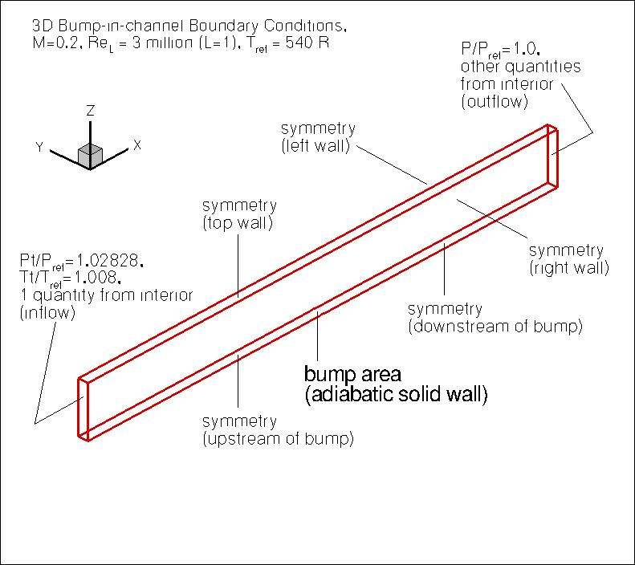
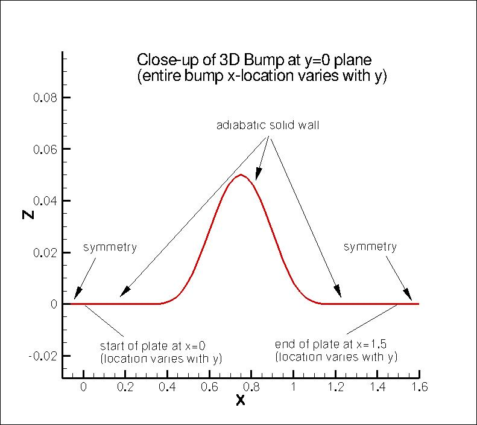
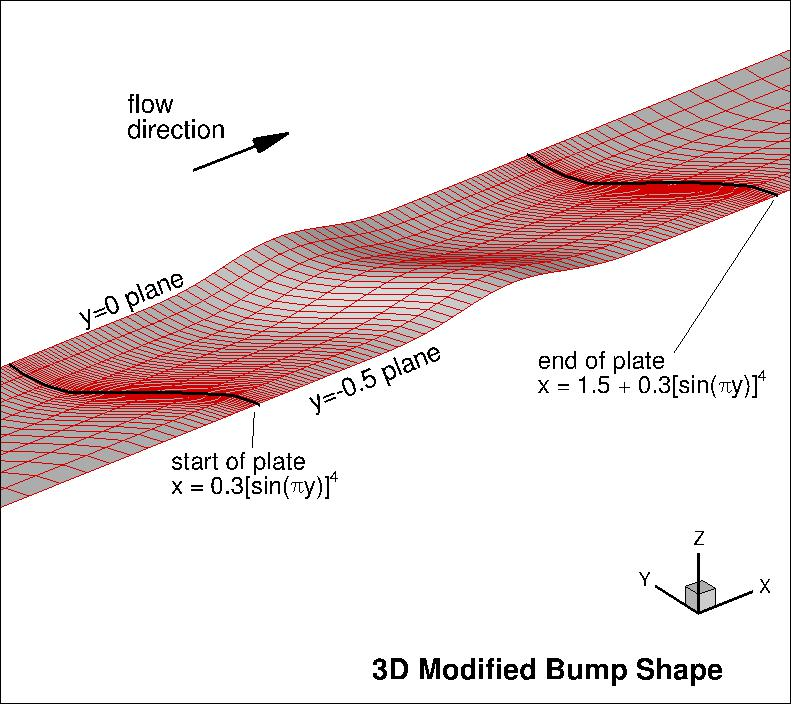

|
Langley Research CenterTurbulence Modeling Resource |
Return to: Turbulence Modeling Resource Home Page
TURBULENCE MODEL NUMERICAL ANALYSIS
3D Modified Bump-in-channel
This case is designed primarily for numerical
analysis of turbulence model simulations; e.g., convergence properties, effect of order of accuracy, etc.
This case is almost the same as the
3D Bump-in-channel Verification
case, except that the grid here is only half in spanwise extent of the original (because of symmetry, the results
should be the same).
A large sequence of nested grids
of the same family are provided here if desired.
The 3D bump-in-channel case is a three-dimensional version of the
2D bump-in-channel verification case,
with spanwise variation added.
In this 3D case the z direction is "up" and y is "spanwise."
It was run at
M = 0.2, at a Reynolds number of Re = 3 million based on
length "1" of the grid.
The body reference area is 0.75 units.
This lower wall is a curved
viscous-wall bump extending from x=0 to 1.5 at the side of the computational domain
y=0, but starting and ending further downstream at y locations
inbetween 0 and -0.5.
The maximum bump height is 0.05. The "2D" definition of the bump at the y=0 plane is:
But the x-location of any position on the bump varies in the spanwise direction
between y=0 and y=-0.5 according to:
where x0 is any given x-location of the "2D" shape at y=0, and
"pi"=3.1415927... The upstream and downstream farfield extends 25 units from
the viscous-wall, with symmetry plane BCs imposed on the lower wall between the farfield and the solid
wall. The upper boundary is a distance of z=5.0 high.
It is taken to be a symmetry plane.
The left and right walls are also taken to be symmetry planes.
The following plots show the layout of this case,
along with the boundary conditions.
They are the same as given for the 3D Bump-in-channel Verification
case (other than the fact that this modified bump is only half the span of the original,
taking advantage of the center plane of symmetry).
Another important note: although M=0.2 is low enough that the flow is "essentially" incompressible,
this is a compressible flow verification case. Therefore, if you run this case with an incompressible
code, your results may be close - but not quite the same - as the grid is refined.



What to Expect:
(Other turbulence model results may be added in the future.)
Return to: Turbulence Modeling Resource Home Page
Responsible NASA Official:
Ethan Vogel z=0.05*(sin(pi*x/0.9-(pi/3.)))**4 for 0.3≤x≤1.2 along y=0
z=0 for 0≤x<0.3 and 1.2 <x ≤1.5
x=x0+0.3(sin(pi*y))**4 for -0.5≤y<0
RESULTS
LINK TO EQUATIONS
MRR Level
SA-neg
SA-neg eqns
4
Page Curator:
Clark Pederson
Last Updated: 01/05/2017